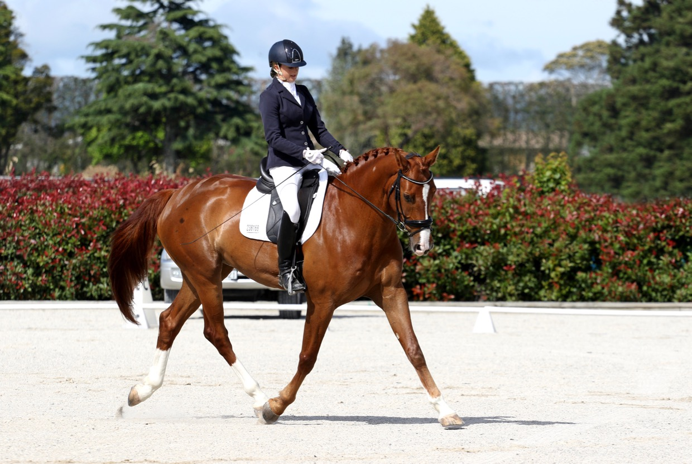
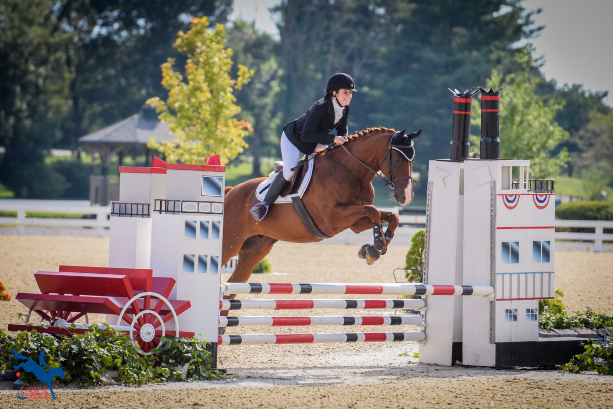

Witaj na stronie Equi Center!
Zapraszamy do świata koni i jeździectwa.
Tutaj znajdziesz wszelkie informacje o różnych dyscyplinach jeździeckich. Zaczynając na klasycznym ujeżdżeniu, kończąc na wyścigach. Dowiesz się jakie są rodzaje konkusów oraz jak są one oceniane

Ujeżdżenie
Zawody
Zawody ujeżdżeniowe są dyscypliną jeździecką, która wymaga od zawodnika i konia wyjątkowej harmonii, precyzji oraz zrozumienia. Ujeżdżenie, nazywane również dressażem, jest podstawowym fundamentem dla wielu innych dyscyplin jeździeckich. Polega na wykonywaniu sekwencji z góry określonych ruchów i figur w różnych chodach, co wymaga zarówno fizycznej sprawności konia, jak i umiejętności precyzyjnego prowadzenia go przez jeźdźca.
Podczas zawodów ujeżdżeniowych, zawodnicy wykonują zestawy figur i ruchów zgodnie z ustalonym wcześniej programem. Te programy mogą różnić się w zależności od poziomu trudności, w którym startuje dany zawodnik i jego koń. Ocena odbywa się na podstawie kilku kluczowych kryteriów, w tym:
1. Harmonia i równowaga:
Ocena obejmuje stopień harmonii i równowagi pomiędzy jeźdźcem a koniem. Ważne jest, aby jazda była płynna i zrównoważona, a koniu dano odpowiednie wskazówki, aby wykonywał ruchy z lekkością i elastycznością.
2. Precyzja i dokładność:
Zawodnicy są oceniani pod względem precyzji wykonania ruchów i figur. Każdy ruch musi być wykonywany zgodnie z wytycznymi, co wymaga doskonałego opanowania techniki przez zarówno jeźdźca, jak i konia.
3. Sprężystość i elastyczność:
Ocena obejmuje również zdolność konia do wykonywania ruchów z elastycznością i sprężystością. Im bardziej koniec wydaje się być zrelaksowany i elastyczny, tym lepsza jest ocena.
4. Równomierność i tempo
: Zawodnicy muszą utrzymać równe tempo podczas wykonywania różnych ruchów i figur. Zbyt szybka lub zbyt wolna prędkość może wpłynąć negatywnie na ocenę.
5. Zrozumienie i współpraca:
Istotne jest, aby pokazać, że jeździec i koń współpracują ze sobą i rozumieją nawzajem. Konie powinny reagować na subtelne sygnały jeźdźca, co wskazuje na głębokie zrozumienie i zaufanie między partnerami. Ocena podczas zawodów ujeżdżeniowych jest dokonywana przez sędziów, którzy obserwują występy zawodników i przyznają punkty za każde kryterium. W końcowej ocenie brane są pod uwagę wszystkie aspekty występu, a zwycięzca jest ten, który zaprezentuje najwyższą jakość jazdy, zgodną z wymaganiami programu oraz kryteriami oceny.
1. Harmonia i równowaga:
Ocena obejmuje stopień harmonii i równowagi pomiędzy jeźdźcem a koniem. Ważne jest, aby jazda była płynna i zrównoważona, a koniu dano odpowiednie wskazówki, aby wykonywał ruchy z lekkością i elastycznością.
2. Precyzja i dokładność:
Zawodnicy są oceniani pod względem precyzji wykonania ruchów i figur. Każdy ruch musi być wykonywany zgodnie z wytycznymi, co wymaga doskonałego opanowania techniki przez zarówno jeźdźca, jak i konia.
3. Sprężystość i elastyczność:
Ocena obejmuje również zdolność konia do wykonywania ruchów z elastycznością i sprężystością. Im bardziej koniec wydaje się być zrelaksowany i elastyczny, tym lepsza jest ocena.
4. Równomierność i tempo
: Zawodnicy muszą utrzymać równe tempo podczas wykonywania różnych ruchów i figur. Zbyt szybka lub zbyt wolna prędkość może wpłynąć negatywnie na ocenę.
5. Zrozumienie i współpraca:
Istotne jest, aby pokazać, że jeździec i koń współpracują ze sobą i rozumieją nawzajem. Konie powinny reagować na subtelne sygnały jeźdźca, co wskazuje na głębokie zrozumienie i zaufanie między partnerami. Ocena podczas zawodów ujeżdżeniowych jest dokonywana przez sędziów, którzy obserwują występy zawodników i przyznają punkty za każde kryterium. W końcowej ocenie brane są pod uwagę wszystkie aspekty występu, a zwycięzca jest ten, który zaprezentuje najwyższą jakość jazdy, zgodną z wymaganiami programu oraz kryteriami oceny.
Klasy
Programy ujeżdżeniowe podzielone są ze względu na poziom trudności. Wyróżnia się 6 klas, które różnią się obowiązującymi w nich elementami:
Klasa L
w której wykonywane są wolty o średnicy 20 m, przejścia stęp – kłus – stęp, kłus – galop – kłus, kłus – stój – kłus oraz żucie z ręki.. Dodatkowo koń porusza się w chodach roboczych oraz stępie pośrednim i stępie swobodnym. Przejazd może być wykonywany w kłusie anglezowanym. Zawody klasy L odbywają się na imprezach rangi towarzyskiej, ich celem jest pokazanie rozluźnienie, giętkość i swobodę w ruchach konia. Akceptację kiełzna jak i równość rytmu i dążność do ruchu naprzód
Klasa P
wolty wykonywane są o średnicy 15 m. Dodatkowo dochodzą elementy takie jak serpentyny, ustępowanie od łydki, kontrgalop, wydłużenie wykroku w kłusie, stępie, galopie oraz stęp i galop pośredni. Od klasy P włącznie zawody rozgrywane są na poziomie regionalnym, do której wymagane jest posiadanie licencji. Programy klasy P sprawdzają oprócz elementów klasy L pewien stopień przepuszczalności i równowagi. Zapoczątkowują siłę pchającą jak i prawidłowe ustawienie podczas wykonywanych figur
Klasa N
klasa, w której uzupełnieniem chodów są stęp, kłus, galop zebrany. Natomiast wśród nowych elementów wyróżniamy: wolty o średnicy 10 m, półpiruet roboczy w stępie, zwrot na zadzie, cofanie, zwykłą zmianę nogi, łopatkę do wewnątrz oraz trawers i ciąg w kłusie. Programy klasy N sprawdzają umiejętności na poziomie klas L i P oraz potwierdzają zdobycie nowych umiejętności jakimi są przyjęcie większego obciążenia przez tylne kończyny, większe zaangażowanie zadu, giętkość, przepuszczalność oraz równowaga
Klasa C
w tej klasie nowymi elementami są pojedyncze zmiany nogi oraz chody boczne w galopie. Program ten prezentuje giętkość, wyprostowanie, zebranie w każdym chodzie oraz wyraźne rozluźnienie pomiędzy chodami zebranymi a wyciągniętymi
Klasa CC
wyróżniamy tu ćwierć piruety, pół piruet oraz piruet w galopie, lotne zmiany nogi co 2,3, 4 tempa
Klasa CS
nowe elementy w tej klasie to lotne zmiany nogi co tempo, piaff oraz pasaż
Klasa L
w której wykonywane są wolty o średnicy 20 m, przejścia stęp – kłus – stęp, kłus – galop – kłus, kłus – stój – kłus oraz żucie z ręki.. Dodatkowo koń porusza się w chodach roboczych oraz stępie pośrednim i stępie swobodnym. Przejazd może być wykonywany w kłusie anglezowanym. Zawody klasy L odbywają się na imprezach rangi towarzyskiej, ich celem jest pokazanie rozluźnienie, giętkość i swobodę w ruchach konia. Akceptację kiełzna jak i równość rytmu i dążność do ruchu naprzód
Klasa P
wolty wykonywane są o średnicy 15 m. Dodatkowo dochodzą elementy takie jak serpentyny, ustępowanie od łydki, kontrgalop, wydłużenie wykroku w kłusie, stępie, galopie oraz stęp i galop pośredni. Od klasy P włącznie zawody rozgrywane są na poziomie regionalnym, do której wymagane jest posiadanie licencji. Programy klasy P sprawdzają oprócz elementów klasy L pewien stopień przepuszczalności i równowagi. Zapoczątkowują siłę pchającą jak i prawidłowe ustawienie podczas wykonywanych figur
Klasa N
klasa, w której uzupełnieniem chodów są stęp, kłus, galop zebrany. Natomiast wśród nowych elementów wyróżniamy: wolty o średnicy 10 m, półpiruet roboczy w stępie, zwrot na zadzie, cofanie, zwykłą zmianę nogi, łopatkę do wewnątrz oraz trawers i ciąg w kłusie. Programy klasy N sprawdzają umiejętności na poziomie klas L i P oraz potwierdzają zdobycie nowych umiejętności jakimi są przyjęcie większego obciążenia przez tylne kończyny, większe zaangażowanie zadu, giętkość, przepuszczalność oraz równowaga
Klasa C
w tej klasie nowymi elementami są pojedyncze zmiany nogi oraz chody boczne w galopie. Program ten prezentuje giętkość, wyprostowanie, zebranie w każdym chodzie oraz wyraźne rozluźnienie pomiędzy chodami zebranymi a wyciągniętymi
Klasa CC
wyróżniamy tu ćwierć piruety, pół piruet oraz piruet w galopie, lotne zmiany nogi co 2,3, 4 tempa
Klasa CS
nowe elementy w tej klasie to lotne zmiany nogi co tempo, piaff oraz pasaż
Znani zawodnicy
W Polsce istnieje wiele utalentowanych zawodników ujeżdżeniowych, którzy osiągają sukcesy zarówno na arenie krajowej, jak i międzynarodowej. Oto kilku znanych polskich jeźdźców ujeżdżeniowych:
Michał Rapcewicz
Jest to jeden z najbardziej znanych polskich jeźdźców ujeżdżeniowych. Zdobył wiele tytułów mistrzowskich na arenie krajowej i międzynarodowej. Był wielokrotnym mistrzem Polski i reprezentował Polskę na wielu międzynarodowych imprezach
Beata Stremler
Jej nazwisko jest dobrze znane w środowisku ujeżdżeniowym. Stremler jest cenioną trenerką i zawodniczką. Zdobyła wiele nagród na krajowych i międzynarodowych zawodach ujeżdżeniowych
Katarzyna Milczarek
To również wybitna polska jeźdźczyni ujeżdżeniowa, która wielokrotnie reprezentowała Polskę na zawodach międzynarodowych. Zdobyła liczne medale na arenie krajowej i była wielokrotnie mistrzynią Polski
Marcin Stachurski
Marcin Stachurski to kolejny znany polski jeździec ujeżdżeniowy. Współpracuje z wieloma konnymi ośrodkami treningowymi i odnosi sukcesy na różnych zawodach ujeżdżeniowych
Aleksandra Szulc
Jest jedną z wiodących polskich zawodniczek ujeżdżeniowych. Regularnie startuje w zawodach krajowych i międzynarodowych, zdobywając liczne wyróżnienia i nagrody
Michał Rapcewicz
Jest to jeden z najbardziej znanych polskich jeźdźców ujeżdżeniowych. Zdobył wiele tytułów mistrzowskich na arenie krajowej i międzynarodowej. Był wielokrotnym mistrzem Polski i reprezentował Polskę na wielu międzynarodowych imprezach
Beata Stremler
Jej nazwisko jest dobrze znane w środowisku ujeżdżeniowym. Stremler jest cenioną trenerką i zawodniczką. Zdobyła wiele nagród na krajowych i międzynarodowych zawodach ujeżdżeniowych
Katarzyna Milczarek
To również wybitna polska jeźdźczyni ujeżdżeniowa, która wielokrotnie reprezentowała Polskę na zawodach międzynarodowych. Zdobyła liczne medale na arenie krajowej i była wielokrotnie mistrzynią Polski
Marcin Stachurski
Marcin Stachurski to kolejny znany polski jeździec ujeżdżeniowy. Współpracuje z wieloma konnymi ośrodkami treningowymi i odnosi sukcesy na różnych zawodach ujeżdżeniowych
Aleksandra Szulc
Jest jedną z wiodących polskich zawodniczek ujeżdżeniowych. Regularnie startuje w zawodach krajowych i międzynarodowych, zdobywając liczne wyróżnienia i nagrody

Skoki przez przeszkody
Zawody
Skoki przez przeszkody to jedna z konkurencji jeździectwa, gdzie jeździec wraz z koniem pokonuje kolejne przeszkody składające się na tor zwany parkurem. Przeszkody mogą się różnić między sobą stopniem trudności i rodzajem konstrukcji, wyróżniamy m. in. stacjonaty, oksery, mury czy rowy z wodą. W zależności od rodzaju konkursu, o zwycięstwie decydują różne czynniki. W zawodach liczy się przede wszystkim prawidłowe pokonanie toru z jak najmniejszą ilością punktów karnych, które przyznawane są za błędy, takie jak strącenie przeszkody, zrzucenie jeźdźca czy odmowa skoku. W tej dyscyplinie istotne znaczenie ma również czas przejazdu.
Spośród najpopularniejszych, tradycyjnych odmian konkursów w skokach przez przeszkody wyróżniamy w szczególności:
Konkursy zwykłe
gdzie o zwycięstwie decydują punkty karne, a w przypadku remisu – czas przejazdu
Konkurs szybkości
zawody na jak najszybsze pokonanie trasy. W tym przypadku błędy oznaczają doliczenie dodatkowego czasu
Konkursy dwunawrotowe i dwufazowe
gdzie zawodnik z koniem muszą pokonać kilka etapów na podobnych lub różniących się od siebie torach
Spośród najpopularniejszych, tradycyjnych odmian konkursów w skokach przez przeszkody wyróżniamy w szczególności:
Konkursy zwykłe
gdzie o zwycięstwie decydują punkty karne, a w przypadku remisu – czas przejazdu
Konkurs szybkości
zawody na jak najszybsze pokonanie trasy. W tym przypadku błędy oznaczają doliczenie dodatkowego czasu
Konkursy dwunawrotowe i dwufazowe
gdzie zawodnik z koniem muszą pokonać kilka etapów na podobnych lub różniących się od siebie torach
Klasy
Klasy w skokach przez przeszkody zależą od wysokości przeszkód oraz stopnia trudności parkuru. Wyróżniamy:
Klasa LL: do 90cm
Klasa L: 100-105cm
Klasa P: 110-115cm
Klasa N: 120-125cm
Klasa C: 130-135cm
Klasa CC: 140-145cm
Klasa CS: 150-155cm
Klasa LL: do 90cm
Klasa L: 100-105cm
Klasa P: 110-115cm
Klasa N: 120-125cm
Klasa C: 130-135cm
Klasa CC: 140-145cm
Klasa CS: 150-155cm
Znani zawodnicy
Michał Kaźmierczak
Jest jednym z czołowych polskich jeźdźców w skokach przez przeszkody. Ma na swoim koncie wiele sukcesów na arenie krajowej i międzynarodowej.
Jarosław Skrzyczyński
To doświadczony polski jeździec, który regularnie reprezentuje Polskę na zawodach skoków przez przeszkody. Osiągnął wiele znaczących wyników w swojej karierze
Bartłomiej Kwiatek
To kolejny znany polski zawodnik w skokach przez przeszkody, który regularnie startuje w zawodach krajowych i międzynarodowych, odnosząc liczne sukcesy
Marek Lewicki
Jest jednym z doświadczonych polskich jeźdźców w skokach przez przeszkody, który od lat rywalizuje na różnych arenach jeździeckich, reprezentując Polskę i osiągając znaczące wyniki
Jest jednym z czołowych polskich jeźdźców w skokach przez przeszkody. Ma na swoim koncie wiele sukcesów na arenie krajowej i międzynarodowej.
Jarosław Skrzyczyński
To doświadczony polski jeździec, który regularnie reprezentuje Polskę na zawodach skoków przez przeszkody. Osiągnął wiele znaczących wyników w swojej karierze
Bartłomiej Kwiatek
To kolejny znany polski zawodnik w skokach przez przeszkody, który regularnie startuje w zawodach krajowych i międzynarodowych, odnosząc liczne sukcesy
Marek Lewicki
Jest jednym z doświadczonych polskich jeźdźców w skokach przez przeszkody, który od lat rywalizuje na różnych arenach jeździeckich, reprezentując Polskę i osiągając znaczące wyniki

Cross
Zawody
Cross, zwany także jako cross-country, to jedna z dyscyplin jeździeckich, która polega na pokonywaniu terenowych tras z przeszkodami. Jest to często widoczna dyscyplina w sportach jeździeckich, szczególnie w sporcie WKKW (Wyszkolenie, Wierzchowanie, Konkursy Wszechstronne), która jest połączeniem ujeżdżenia, skoków przez przeszkody i crossu. Trasa crossowa prowadzi przez zróżnicowane tereny, w tym przez lasy, pola, stawy, strumienie itp. Na trasie ustawiane są różnego rodzaju naturalne przeszkody, takie jak ściany, palisady, ziemne nasypy, stawy, a także sztucznie wykonane, np. wodne groble, skocznie, itp. Trasy crossowe są projektowane tak, aby zawodnicy musieli zmagać się z różnorodnymi warunkami terenowymi, takimi jak strome wzniesienia, błotniste odcinki, trudne do przejścia lasy, a także szerokie otwarte przestrzenie. Podczas jazdy w crossie ważne jest utrzymanie odpowiedniej prędkości, aby pokonać trasę w wyznaczonym czasie, jednocześnie zachowując kontrolę nad koniem i pokonując przeszkody z precyzją i bezpieczeństwem. Cross to nie tylko sprawdzian umiejętności jeździeckich, ale również wytrzymałości i kondycji konia. Konie muszą być przygotowane do pokonywania długich tras z przeszkodami, utrzymując równowagę i energię przez cały wyścig.
Klasy
W Polsce zawody w konkurencji WKKW rozgrywane są w następujących klasach:
– CNC 80, czyli pierwszy stopień wprowadzający konia i jeźdźca w tajniki pokonywania przeszkód terenowych, przeznaczona dla młodych koni i kucy
– CNC 90
– CNC 100 – inaczej lekka
– CNC 1*, pośrednia pomiędzy początkiem kariery WKKW, a pierwszym etapem międzynarodowego poziomu
– CNC 2*
– CCI 2*, czyli wprowadzenie koni i zawodników w szeroki zakres przeszkód na poziomie międzynarodowym, kierowana przede wszystkim dla juniorów
– CCI 3*, zawierają bardziej skomplikowane wymagania, rywalizują w niej Młodzi Jeźdźcy
– CCI 4* poziom kwalifikujący zawodnika i konia do zawodów rangi Mistrzostw Europy, Świata oraz Igrzysk Olimpijskich
– CCI 5* to najwyższy poziom zawodów WKKW. Na tym poziomie rozgrywanych jest jedynie kilka konkursów na całym świecie w ciągu roku
Konkursy Międzynarodowe rozgrywane są w seriach krótkich z oznaczeniem „S” oraz w formacie długim „L”. Serie te różnią się między sobą długością dystansu i ilością przeszkód.
– CNC 80, czyli pierwszy stopień wprowadzający konia i jeźdźca w tajniki pokonywania przeszkód terenowych, przeznaczona dla młodych koni i kucy
– CNC 90
– CNC 100 – inaczej lekka
– CNC 1*, pośrednia pomiędzy początkiem kariery WKKW, a pierwszym etapem międzynarodowego poziomu
– CNC 2*
– CCI 2*, czyli wprowadzenie koni i zawodników w szeroki zakres przeszkód na poziomie międzynarodowym, kierowana przede wszystkim dla juniorów
– CCI 3*, zawierają bardziej skomplikowane wymagania, rywalizują w niej Młodzi Jeźdźcy
– CCI 4* poziom kwalifikujący zawodnika i konia do zawodów rangi Mistrzostw Europy, Świata oraz Igrzysk Olimpijskich
– CCI 5* to najwyższy poziom zawodów WKKW. Na tym poziomie rozgrywanych jest jedynie kilka konkursów na całym świecie w ciągu roku
Konkursy Międzynarodowe rozgrywane są w seriach krótkich z oznaczeniem „S” oraz w formacie długim „L”. Serie te różnią się między sobą długością dystansu i ilością przeszkód.
Znani zawodnicy
Paweł Warszawski
Reprezentant Polski w WKKW, współpracujący z trenerem Andreasem Dibowskim i Bogusławem Jareckim. Swoją przygodę z jeździectwem rozpoczął w wieku 12 lat w Stadninie Koni Walewice. Dwukrotny srebrny medalista drużynowo w Mistrzostwach Europy Juniorów (rok 1998 i 1999). Paweł jest wielokrotnym zdobywcą medali Mistrzostw Polski, sześciokrotnym reprezentantem kraju na Mistrzostwach Europy i czterokrotnym zdobywcą Pucharu Polski.
Jan Kamiński
Reprezentant Mazowsza, założyciel klubu Equikam. Jako zawodnik odnosił wiele sukcesów na arenie ogólnopolskiej (3 medale z Mistrzostw Polski Seniorów, Tytuł Mistrza Polski 2018, zwycięzca Pucharu Polski 2019, 2023) oraz międzynarodowej. Trzykrotny uczestnik Mistrzostw Europy. Poza startami zajmuje się również trenowaniem zawodników, trzykrotnie uczestniczył w młodzieżowych Mistrzostwach Europy jako trener. Jego podopieczni zdobywali liczne medale Mistrzostw Polski.
Julia Gillmaier
Reprezentantka klubu Konie Sportowe Gillmaier, studentka startująca również w skokach. Dwukrotna Mistrzyni Polski Młodych Jeźdźców WKKW, dwukrotna srebrna medalistka Mistrzostw Polski Juniorów WKKW, Zwycięzca Pucharu Polski WKKW Juniorów, uczestniczka Mistrzostw Europy w Millstreet w 2017, Fontainebleau w 2018 oraz Maarsbergen w 2019. Mistrzyni Polski Seniorów 2023
Reprezentant Polski w WKKW, współpracujący z trenerem Andreasem Dibowskim i Bogusławem Jareckim. Swoją przygodę z jeździectwem rozpoczął w wieku 12 lat w Stadninie Koni Walewice. Dwukrotny srebrny medalista drużynowo w Mistrzostwach Europy Juniorów (rok 1998 i 1999). Paweł jest wielokrotnym zdobywcą medali Mistrzostw Polski, sześciokrotnym reprezentantem kraju na Mistrzostwach Europy i czterokrotnym zdobywcą Pucharu Polski.
Jan Kamiński
Reprezentant Mazowsza, założyciel klubu Equikam. Jako zawodnik odnosił wiele sukcesów na arenie ogólnopolskiej (3 medale z Mistrzostw Polski Seniorów, Tytuł Mistrza Polski 2018, zwycięzca Pucharu Polski 2019, 2023) oraz międzynarodowej. Trzykrotny uczestnik Mistrzostw Europy. Poza startami zajmuje się również trenowaniem zawodników, trzykrotnie uczestniczył w młodzieżowych Mistrzostwach Europy jako trener. Jego podopieczni zdobywali liczne medale Mistrzostw Polski.
Julia Gillmaier
Reprezentantka klubu Konie Sportowe Gillmaier, studentka startująca również w skokach. Dwukrotna Mistrzyni Polski Młodych Jeźdźców WKKW, dwukrotna srebrna medalistka Mistrzostw Polski Juniorów WKKW, Zwycięzca Pucharu Polski WKKW Juniorów, uczestniczka Mistrzostw Europy w Millstreet w 2017, Fontainebleau w 2018 oraz Maarsbergen w 2019. Mistrzyni Polski Seniorów 2023
O nas
Strona wykonana w pramach zadania z przedmiotu Programowanie w Internecie. Nie gwarantuje poprawności informacji
Kontakt
Aleksandra Oknińska, nr indeksu 210907
E-mail: s210907@sggw.edu.pl